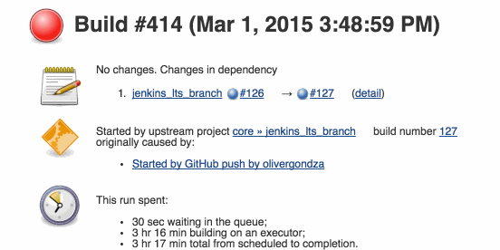
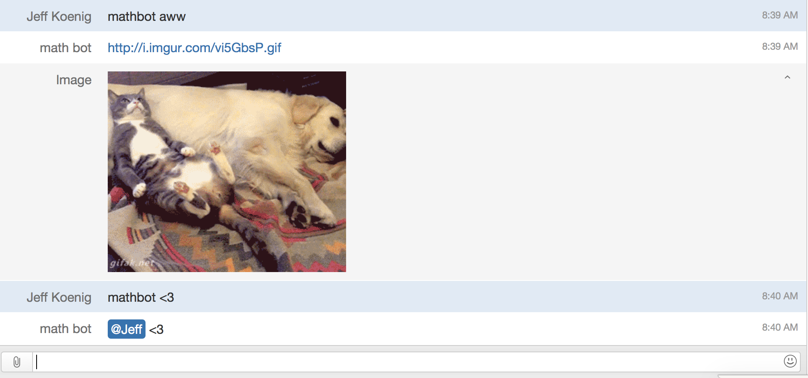
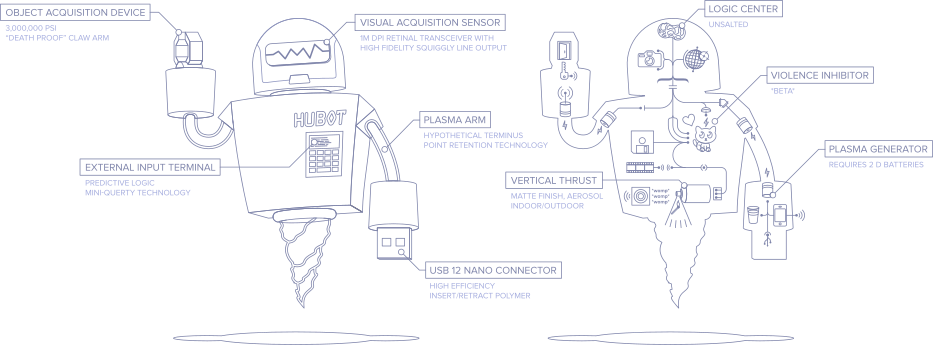
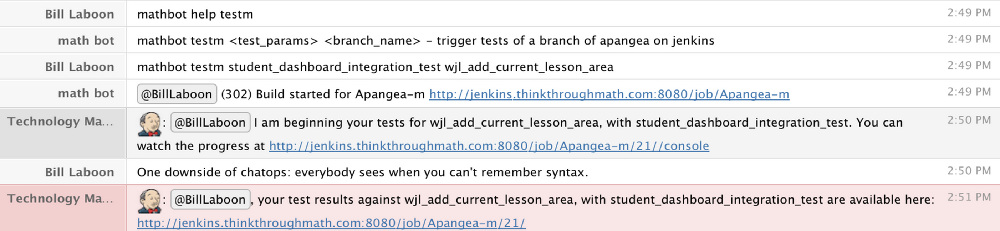

Automation
The must have trend of 2015
These Slides: TheJefe.github.io/automation/ Created by Jeff Koenig Twitter: @JeffKoenig Github: TheJefe
What.is.Automation?
What can automation do?
Build
Test
Deploy

Fun
Why you need automation?
Because we want to ship code often.
Why you need automation?
Find major issues in your codes in minutes, rather then weeks
THROW THEM AWAY
Why you need automation?
Because weeks of manual regressions tests is mind-numbing.
maintaining manual test scripts is monotonous

Why you need automation?
It frees up your team to do more interesting things.
Effective and Efficent
configure it be part of your workflow
automatically deploy your staging environment
How to get started
Pick a Test Framework
- MiniTest
- Rspec
- Jasmine
- Cucumber
- JUnit
Selenium
Write Tests!
Start with your core stuff
When you find a bug, write a test to reproduce it
New features means new tests
Find your projects weak points
Write some automated tests to expose those issues
The Solution: Continuous Integration
What.is.CI?
Automated tasks that fit to your workflow
CI Options
Trigger Build/Tests for Feature and Release Candidate branches
Create a Build Pipeline
Continuous Deployment
When code passes all tests, a production deployment is triggered
Welcome to Automation Nirvana
Common Problems
Common Problems
ND Failures
Common Problems
Over Automated
Common Problems
Accessibility
Culture
Agree on Ground Rules
Code with failing tests SHALL NOT be MERGED
Code with failing tests SHALL NOT be DEPLOYED
New features SHALL NOT be merged without tests
YOU MUST DO Test Driven Development
(TDD)WRONG
git rebase -iWho is responsible for writing tests?
THE TEAM
ChatOps
What.is.ChatOps?
Chat bot that hears and responds to specific things in chat
Hubot
ChatOps
 used with permission from BillAdvantage of ChatOps
used with permission from AndreMore on ChatOps
slides.com/carolnichols/chatopsCourtesy of Carol Nichols
THE END
LINKS!!!
- Twitter: @JeffKoenig
- Github: TheJefe
- These Slides: TheJefe.github.io/automation/
- Jenkins CI
- Cloudbees for Jenkins hosting
- Travis CI
- TeamCity
- Chat bot:Hubot